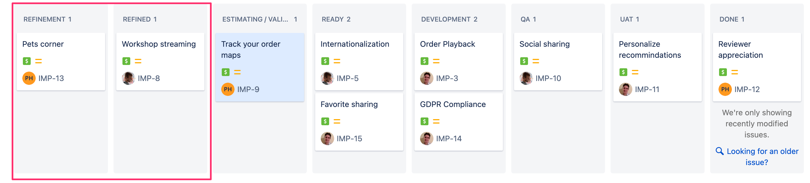

Refinement page
Learn how to refine an idea into a useful form.
Overview
This training covers:
- What "refined" means and its purpose
- How to use the refinement and refined status and jira colunns
- How to sort

The Refinement List
This is a list of initiatives that you (as some sort of Product / Program / Project person) have agreed to take on. These should be sorted by priority, with the most important items at the top.
Moving items into Refinement
Ideally, the ideas list is continuously be sorted during program meetings.
If the team responsible for scoping items has capacity, then items can be moved
into the refinement list. Make sure to assign the person responsible for
scoping the feature.
Generally, you should not accept more than 1-2 initiatives a sprint.
Sorting the Refinement list
The refinement list should be sorted by each initiative's expected value, highest value at the top. This won't easily be known at this point, but use your best judgement.
Rice scoring can help here
What does refined mean?
Refined is ultimately about making sure everyone is on the same page on the idea. The idea needs to be concrete enough to validate it AND to estimate it with at least about 50% average certainty.
We generally suggest including the following information from the start:
Impact - What outcome would you like as a result of this work? This should be a value tied to KPIs.
Example: We expect 5% more returning customers.
Problem - What problem are you trying to solve. This problem should relate to a customer or product team problem.
Example Customer Problem: Reoccurring customers want to feel appreciated for their repeat business.
Example Product Team Problem: Our product team needs to make product decisions based off user data.
As the idea takes on more specifics, we suggest including the following:
People - Who influences the shape of the story: Stakeholders, Engineers, etc.
High level user stories - What will the user need to do. Include happy and negative paths. Ideally, these are coupled with a wireframe.
Out of scope items - What features will not be included.
Considerations - Technical or other considerations or assumptions related to the initiative.
Questions - Questions to be answered.
Moving items into Refined
As stated above, the first step to moving an item to refined is to get agreement upon the impact and problem.
After that point, the goal is to rapidly identify the Minimal Marketable Feature (MMF).
The Minimal Marketable Feature is the smallest iteration of the feature where some impact can be felt by the customer (or the product team).
To identify the MMF, you want to start with the user journey. This can be done with a variety of techniques, but the best is generally drawing up a quick user flow in a white-boarding app like miro or basamiq.
TODO: Example whiteboarding
How to get an initiative to has requirements?
The initiative's feature, from the perspective of all users, should be documented. A rough wireframe of the functionality should be provided. The features that are not in scope should be explicitly called out.
How to sort the has requirements list?
This should be sorted by each initiative's expected value.